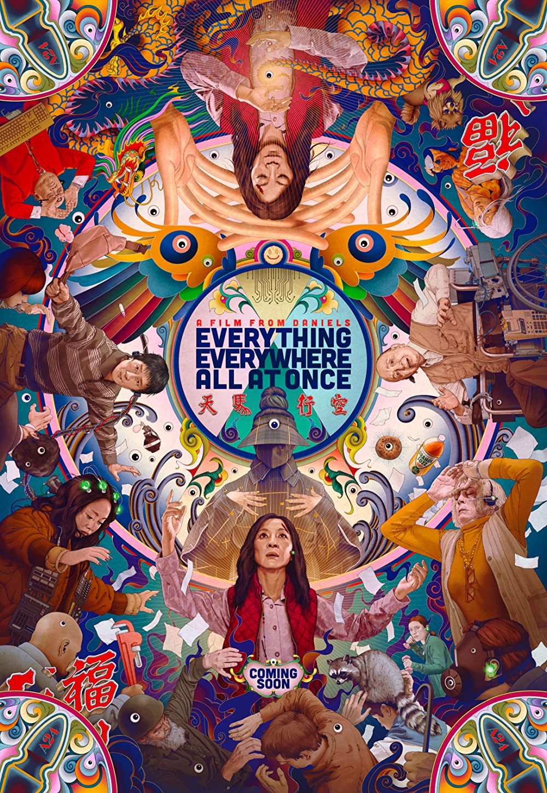
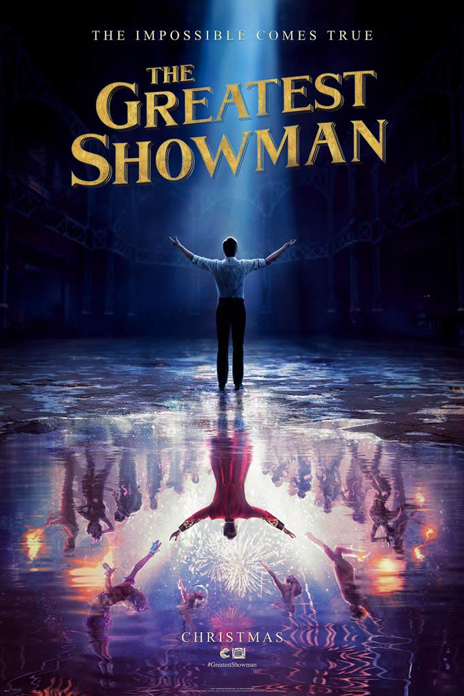
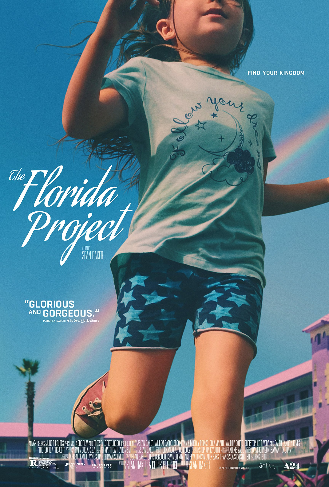
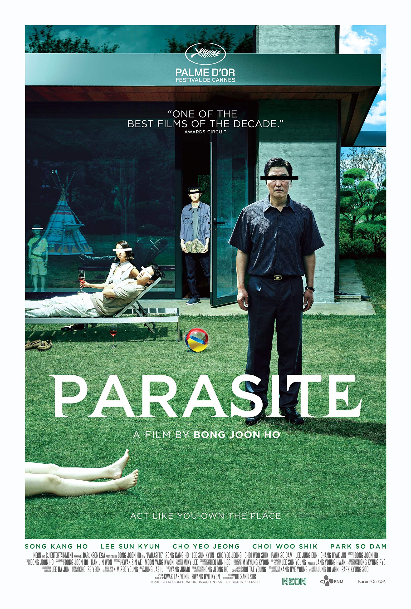

Everything Everywhere All At Once (2022)
Director: Daniel Scheinert, Daniel Kwan
Rated: R
Summary: An aging Chinese immigrant is swept up in an insane adventure, where she alone can save what's important to her by connecting with the lives she could have led in other universes.
My Review: 5/5
My Thoughts: The plot. The pace. The acting. The editing. Everything about this film complements each other. Not only is it entertaining, it also does a well job delivering a heartwarming story. I also love the asian representation in films.
Genres
- Adventure
- Action
- Science Fiction
The Greatest Showman (2017)
Director: Michael Gracey
Rated: PG
Summary: The story of American showman P.T. Barnum, founder of the circus that became the famous traveling Ringling Bros. and Barnum & Bailey Circus.
My Review: 4.5/5
My Thoughts: The Greatest Showman was entertaining from the moment it started.The impactful scene in the beginning set the pace. Plus, the soundtrack itself was beautiful.
Genres
- Musical
- Drama
The Florida Project (2017)
Director: Sean Baker
Rated: R
Summary: The story of a precocious six year-old and her ragtag group of friends whose summer break is filled with childhood wonder, possibility and a sense of adventure while the adults around them struggle with hard times.
My Review: 5/5
My Thoughts: The Florida Project was a film that I had to watch in one of my film classes but I loved every second of it. The colors are so beautiful and the cinematography was excellent. I love watching a film that is in an innocent child's perspective unaware of the adult lives. Don't get me started with the ending scene.
Genres
- Drama
WALL-E (2008)

Director: Andrew Stanton
Rated: G
Summary: WALL-E is the last robot left on an Earth that has been overrun with garbage and all humans have fled to outer space. For 700 years he has continued to try to clean up the mess, but has developed some rather interesting human-like qualities. When a ship arrives with a sleek new type of robot, WALL-E thinks he's finally found a friend annd stows away on the ship with it leaves.
My Review: 4.5/5
My Thoughts: WALL-E is a film for both children and adults. I remember watching it when I was in elementary school but wasn't able to understand the meaning of the film until I got older. I appreciate this film so much because it is a preview of what will happen in the future if us, as humans, keep going down this hole. It is heartwarming and adorable.
Genres
- Family
- Animation
- Science Fiction
Parasite (2019)
Director: Bong Joon-ho
Rated: R
Summary: All unemploye, Ki-taek's family takes peculiar interest in the wealthy and glamours Parks for their livelihood until they get entangled in an unexpected incident.
My Review: 5/5
My Thoughts: I'm not a big fan of thrillers but I have no regrets after watching this film. The pace of the film was perfectly done and got me on the edge of my seat. Parasite definitely deserved the Academy Award for Best Picture.
Genres
- Comedy
- Drama
- Thriller
Spiderman: No Way Home (2021)

Director: Jon Watts
Rated: PG-13
Summary: Peter Park is unmasked and no longer able to separate his normal life from the high-stakes of being a super-hero. When he asks for help from Doctor strange the stakes become more dangerous, forcing him to discover what it ruly means to be Spider-Man.
My Review: 5/5
My Thoughts: I remember watching this at 6AM on the day it premiered. It was memorable to see the theater full of Marvel fans applaud as their favorite characters displayed on the screen. It was breathtaking and the special effects were very detailed. I loved every moment of it and would do anything to rewatch it for the first time again.
Genres
- Action
- Adventure
- Science Fiction
Ratatouille (2007)

Director: Dean Fleischer Camp
Rated: G
Summary: A rat named Remy dreams of becoming a great French chef despite his afmily's wishes and the obvious problem of being a rat in a decidedly rodent-phobic profession. When fate places Remy in the sewers of Paris, he finds himself ideally situated beneath a restaurant made famous by his culinary hero, Auguste Gusteau. Despite the apparent dangers of being an unlikely - and certainly unwanted - visitor in the kitch of a fine French restaurant, Remy's passion for cooking soon sets into motion a hilarious and exciting rat race that turns the culinary world of Paris upside down.
My Review: 4.5/5
My Thoughts: Ratatouille is a simple and cute animated film and I never get bored of. The music and animation is beautiful and it makes me want to visit Paris. It highlights the life of being a chef and it never fails to make me smile.
Genres
- Fantasy
- Family
- Comedy
- Animation
Kingsman: The Secret Service (2014)

Director: Matthew Vaughn
Rated: R
Summary: The story of a super-secret spy organization that recruits an unrefined but promising street kid into the agency's ultra-competitive training program just as a global threat emerges from a twisted tech genius.
My Review: 4.5/5
My Thoughts: Kingsman: The Secret Service was action jam packed with intense and hilarious scenes. The acting was phenomenal and my eyes never left the screen, afriad of missing a part of the film.
Genres
- Action
- Comedy
- Crime
- Adventure
Knives Out (2019)

Director: Rian Johnson
Rated: PG-13
Summary: Whe a renowned crime novelist Harlan Thrombey is found dead at his estate just after his 85th birthday, the inquisitive and debonair Detective Benoit Blanc is mysteriously enlisted to investigate. From Harlan's dysfunctional family to his devoted staff, Blanc sifts through a web of red herrings and self-serving lies to uncover the truth behind Harlan's untimely death.
My Review: 4/5
My Thoughts: Something about mysterty and crime films makes my brain go nuts. Knives Out really got me thinking who did it as well as admiring Chris Evans on my screen.
Genres
- Comedy
- Mystery
- Crime